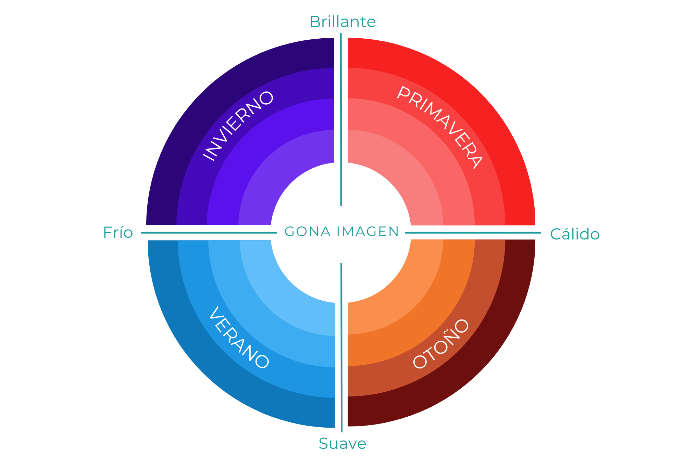
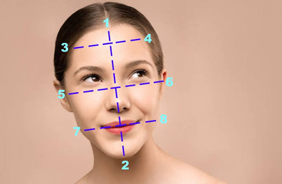

¿Qué es LUMIII?
LUMIII es un Sistema Experto de Inteligencia Artificial que actúa como asesor de imagen y vendedor autónomo para tiendas virtuales:
Diagnóstico Biométrico
Analiza el rostro del usuario (vía cámara o video) para identificar su Morfología (forma del rostro: redondo, ovalado, etc.) y su Colorimetría (subtono de piel: invierno, verano, otoño, primavera).
Motor de Inferencia
Cruza estos rasgos mediante reglas lógicas ("SI el rostro es redondo... ENTONCES...") para determinar qué cortes, prendas y colores le favorecen.
Vendedor Autónomo y Predictivo
Busca automáticamente en el catálogo (usando códigos alfanuméricos/SKUs) para recomendar la ropa ideal. Además, utiliza Machine Learning para analizar el histórico de ventas y predecir tendencias de demanda, optimizando el inventario del negocio.
Colorimetría
La colorimetría estudia el subtono natural de la piel, el cabello y los ojos para determinar qué paleta de colores favorece más a cada persona. LUMIII clasifica este subtono en cuatro "estaciones", cada una asociada a una gama de colores:
- Invierno: colores fríos e intensos — negro, plateado, azul marino.
- Verano: tonos suaves y fríos — gris perla, rosa palo, azul cielo.
- Otoño: tonos cálidos y terrosos — carey, bronce, verde oliva, mostaza.
- Primavera: colores cálidos y luminosos — dorado, coral, melocotón, turquesa.

Morfología
La morfología facial estudia las proporciones del rostro (largo, ancho de pómulos, frente y mandíbula) para identificar su forma general. LUMIII reconoce cuatro tipos principales y qué estilo de montura favorece a cada uno:
- Redondo: monturas angulares o rectangulares aportan estructura y contrastan con la suavidad de los rasgos.
- Cuadrado: monturas redondeadas u ovaladas suavizan los ángulos marcados de la mandíbula.
- Diamante: monturas ovaladas o cat-eye suave equilibran pómulos prominentes.
- Ovalado: rostro versátil, casi cualquier forma de montura queda bien.
